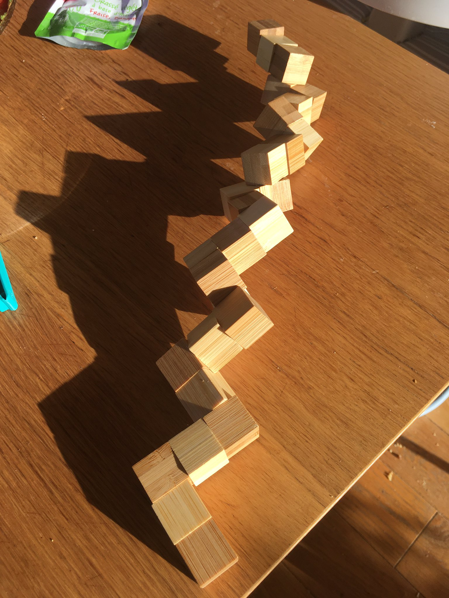
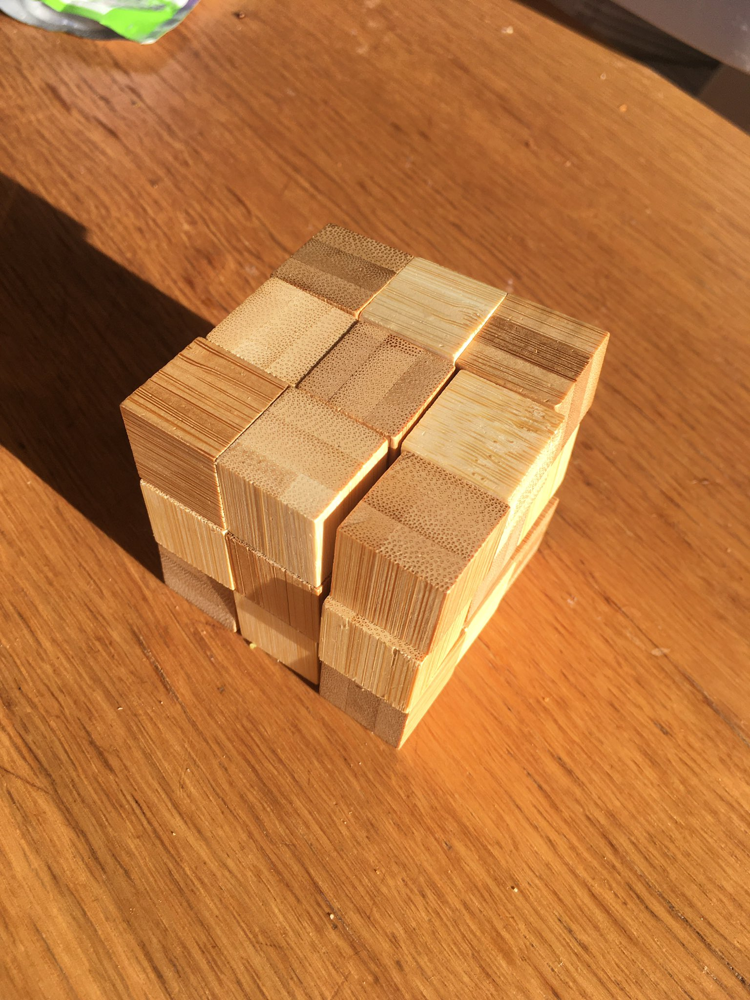
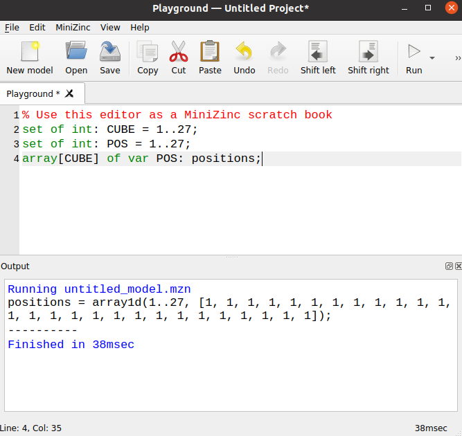
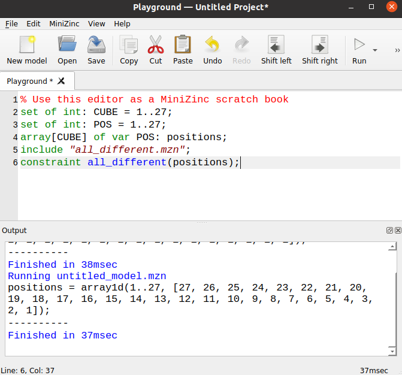
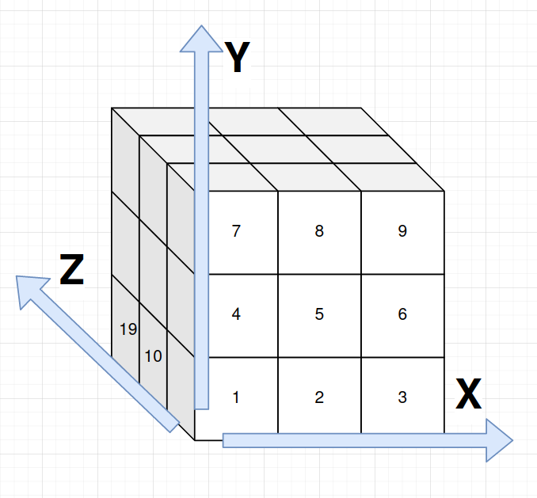
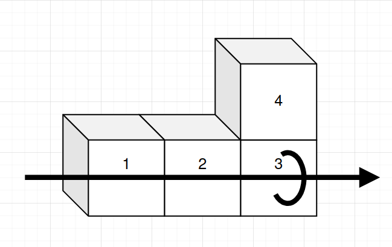
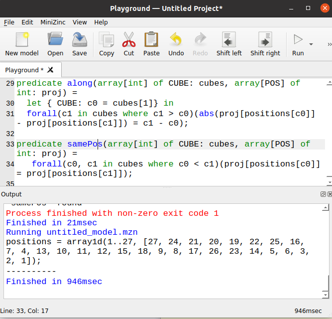

Solving the Snake Cube puzzle
On Sat, 01 Jan 2022, by @lucasdicioccio, 6403 words, 19 code snippets, 8 links, 7images.
In 2021, Santa brought me this puzzle:  This is sometimes named the “Snake-Cube” because the device looks like a snake 🐍 when unfolded. The goal of this game is to fold it into a cube 📦 like this.  The device is built with cubes that are drilled across some faces so that a strap runs trough cubes like beads. Cubes thus have some degree of freedom to rotate around the strap. Overall, two cubes are terminal and the other ones then either are straight or corners depending on the shape of hole. Whether you can visualize how “it works” or not, you should definitely check this link can give you an appreciation of the craft behind a wooden Snake Cube.
After solving the Snake-Cube by hand, the puzzle started pinching my interest. I could imagine a procedure to invent “new” Snake-Cube puzzles (by drawing a path that fills the cube in 3D, a common graph-theory problem) but I wanted to convince myself: is there only one solution? Can I make a program to solve the Snake-Cube automatically and somewhat efficiently? I decided to give it a try with MiniZinc, a constraint programming toolbox. This article is an introduction to MiniZinc and illustrates how one can solve real-world problem with MiniZinc. We explain basic formal modeling techniques and touch on some advanced topics as well. No prior knowledge of MiniZinc is required although we will not run you through the menus of the IDE before showing screenshots.
A MiniZinc model
MiniZinc is a language for finite-search discrete programming. These complicated words mean that you get to declaratively specify, in a restricted formal language, what the characteristics of your problem are. A key restriction is that all variables are known and have a finite number of possible states. This restriction is not really a limitation in our case. A computer program then ingests the formal specification and automatically find solutions to the problem, or proves there are none.
Basic formalism for the Snake-Cube
To solve the Snake-Cube we need to capture interesting properties of the puzzle with variables. Introducing variables is like having words to discuss concepts. Variables must have a name and a domain (i.e., a range of allowed values).
For instance, the snake is made of small cubes. There are 27 (3x3x3) cubes in total. Thus we can give a name to each individual cube in the snake. Since solvers work with numbers, the easiest way is to use numerical names (i.e., indexing of values).
set of int: CUBE = 1..27;
This MiniZinc statement says that we number each individual cube starting from
1 up to 27. We could have used 0..26 or another indexing scheme. The
choice is a matter of preference but sometimes in MiniZinc it is convenient to
leave 0 as a special index to represent ‘absence of cube’.
Another way to imagine the Snake-Cube, rather than focusing on the snake 🐍, let’s focus on the cube 📦 . Let’s introduce the concept of folded-cube, which represents the cube as a collection of 27 slots or positions. This concept of position allows-us to explain the rules of Snake-Cube. Thus, let’s give a numerical index to each final position.
set of int: POS = 1..27;
Astute readers may wonder why both CUBE and POS are numbered 1..27. The
enumeration of values 1 to 27 is merely the representation of integers backing
the individual and separate concepts. Another way to put it, is to say that
POS and CUBE represent two different sets, and hence have different types.
Which means that whenever we use a CUBE in a function or as an array index,
we get a MiniZinc compiler warning.
At this point, we have not achieved much yet, but we set up the basics of the
problem. We can start recognizing and formulating the puzzle in a more formal
way. Goal of the Snake-Cube: we need to attribute exactly one of the 27
positions to each one of the 27 cubes. The new concept here is the
assignment, and we will need to introduce new variables in MiniZinc to be
able to speak about the assignment. Further, the POS and CUBE concepts
are immanent in our problem, there is not much work for MiniZinc, whereas this
new concept of assignment is like a guess or a blank that MiniZinc will have
to fill-in. We refer to these variables as decision variables which are
annotated with the var keyword. Since we need to guess one position for each
cube, we need as many decision variables as there are cubes. Rather than
writing 27 times var POS , we can bundle these variables in a dimensional
arrays. Like variables, dimension variables must have some initial domain. For
instance machine integers, 1..100, or some set introduced beforehand. In our
case, for each CUBE we want a var POS. So let’s introduce one array,
indexed by CUBE and containing var POS:
array[CUBE] of var POS: positions;
Repeating for clarity: this statement says that positions is an array, which
is indexed by CUBE (i.e., it has one item for each of the 27 cubes) and of
which items are positions to be decided.
If we run the solver like this, MiniZinc will happily find a solution (that is,
it will be able to determine a concrete POS for each var POS in the
positions array

This screenshot shows an output of MiniZinc in the bottom pane (with our trivial problem model in the top pane). The message roughly said that MiniZinc found a correct assignment so far: every cube is put in the same position. This solution is unsatisfactory for the puzzle, but the reason is obvious: we have not given any “rules” of the Snake-Cube yet.
Modeling the rules of Snake-Cube
I claim there are two broad set of rules in the Snake-Cube.
On the first hand, some rules are enforced by physics. For instance, cubes cannot overlap in space, corners force a change of direction, the rubber band filing through the cube forces a sort of continuity. On the other hand, other rules are enforced by our curiosity, in the Snake-Cube the fact that the final shape actually is a cube, rather than, say, a L-shape is quite important. Otherwise, Snake-Cube would not be a puzzle but a mere toy to hammer things and make noise.
Encoding such rules into a model requires some process to express a vague intention of a high-level statement – like the rules I stated above – into some given formalism. Such a translation takes some practice, but you do not have to be intimidated. I would say that the formulating a constraint-programming problem has some similarities with formulating complicated SQL queries given an imprecise business requirement: you need to take care of NULLs, whether a RIGHT or LEFT join and all these sorts of things that can ruin the validity or the performance of the query.
The MiniZinc formalism, is built around a set of constraints statements with a small set of basic logic introduction rules rules (equality, negation, inequalities, connectives: roughly what you get in predicate logic). Constraints add some coupling between variables, and allow the solver to perform some reasoning to shrink the domain of decision variables via a series of deductions. For instance, if you must guess a number between 1 to 10 but you learn that doubling this number is at least 16, then you can reduce the choice to 8, 9, or 10. In a proper business setup 16 could represent a target number of sales and the guess could represent the amount to spend on advertisement. In this example you would try to find the least amount to spend that still hit the target. In more involved examples, the target 16 could instead also be a decision variable in relationship with other commitments (i.e., there are more indirect coupling between two sets of decisions but the solver can still reason about these). Summarizing, a model requires to formalize how variables are linked to each other with a web constraints. These constraints have limited expressively so that a solver can propagate information between variables and along the connections that constraints impose.
Coming back to the Snake-Cube, let’s take for instance a physical rule that
cubes cannot overlap. Let’s iteratively reformulate this statement in the
MiniZinc language. Without doing to much maths ceremony, we could say that
cubes cannot overlap means that there can be at most one CUBE per POS.
Alas at most one is a pretty complicated term, we so far only have CUBE,
POS, and positions as objects to manipulate. Thus, if we want to count how
many CUBE exists in each POS we would have to introduce variables for counting
occurrences of POS. All theses variables seem like a lot of extra work and we
can try to find simpler expressions of the same rule. If we try to rephrase
further, we could find a “simpler” way to encode our rule. We don’t need to count
every occurrence but rather we should prevent co-occurrences. That is, to say,
in a formal tone no two distinct CUBEs can be attributed to the same POS in
the position array. Even if this formulation hurts the ears, this
formulation is good because we already have everything at our disposal. In
MiniZinc, this statement would be written like this
constraint forall(c1, c2 in CUBE c1 != c2)
(position[c1] != position[c2])`;
The constraint keyword introduces a new constraint. The forall keyword has
two sets of braces: an iteration binds variable names, in that case over all
pairs of distinct CUBE. The second set of braces contains another constraint,
which in this case is merely looking up the positions of CUBEs and requesting
that their POS are different, since position is an array indexed by CUBE
we just need to perform a lookup. This indexing illustrates how natural it
becomes to have arrays indexes by variables defined. You do not have to
translate back to numerical indices starting at zero (or one depending on your
typical programming language), MiniZinc translates indices for you.
Such a constraint of uniqueness of decision variables often arises while
formalizing problems. Even if terse, it would be cumbersome to rewrite such a
constraint every single time. Fortunately MiniZinc has a number of features to
help with repetitive work: functions and predicates functions are like your
typical programming function with arguments and an output. However they behave
morally more like macros (i.e., MiniZinc will expand their content). Whereas
predicates are functions that return constraints. As a modeler you would use
predicates and functions to create increasingly-high level constraints from
atomic constraints. You will find a library predicate in MiniZinc named
all_different. Thus we can rewrite our statement above with
include "all_different.mzn";
constraint all_different(positions);
This formulation is better than the forall because it is more declarative:
you cannot really mix it up. This formulation also has an incredible
advantage: solvers can recognize these predicates and implement special
routines to solve them faster. In constraint programming, such predicates are
named globals because globals can efficiently propagate information to all
variables at once, rather than the more point-to-point propagation which
occurs with the “pedestrian” implementation. If a specific solver doesn’t know
how global, MiniZinc defaults to a semantically-equivalent implementation (in
short: the compatibility matrix is built-in). If we run MiniZinc we now get
something better.

The assignment we get now looks more correct (whatever that means). In a
sense we can convince ourselves that we already have forced every CUBE to fit
in a box, and that no two cubes will ever be in the same position. Remember
that we have 27 CUBEs. All stars align, we have enforced the folded-cube
rule without thinking too much about it! Did we? actually it is not that
simple. Constraint programming is a bit like an evil genie: it will answer
your wishes but did you clearly state your wish? Let’s recap what we have done.
So far we have discussed MiniZinc and brushed some vague explanation about how
a constraint-solver works. We have seen the basics of what formalizing a game
with variables and constraints. We managed to define variables to name every
CUBE in the snake and every POS in the folded-cube. We recognized that we need
to find one POS for every CUBE and thus built an array to store a decision POS
for every CUBE. We also used the global predicate all_different to force
every CUBE to be in a different POS, hence encoding some rules. All of this
setup was mostly introductory.
Now what’s left: well, the folding problem is left! At this point, there are no
connections between individual cubes. It’s like if we torn apart the Snake and
stacked all the cubes and re-ordered them. We have not spoken about geometry at
all. We don’t even know if the POS numbering represents a 3x3x3 object
because we have not inserted that into our model at all. To go further we’ll
need to introduce some notion of coordinates.
A coordinates system
Coordinates will be useful for two things: first, ensure that our POS numbering
represents a 3x3x3 cube (remind that if you somehow forget this, the evil genie
will mis-interpret your wish). And the coordinates will also be able to enforce
the rules of what are valid folds that do not tear the snake apart.
3d-coordinates of positions
Let’s take a direct approach and define one type per dimension. Each POS will
have one coordinate value in every dimension. We can model this characteristics
with three array indexed by POS and that contains one dimensional value.
In object-oriented programming you would model that with a list of Position object, each containing three coordinates named x, y, and z. In MiniZinc you have three lists in parallel, each one encoding a single coordinate. Such a modeling with “one column per field” is typical in ‘columnar databases’ or in ‘ECS frameworks’, or even good old ‘CSV files’.
In MiniZinc you write:
set of int: X = 0..2;
set of int: Y = 0..2;
set of int: Z = 0..2;
array[POS] of X: xs = [ (p - 1) mod 3 | p in POS ];
array[POS] of Y: ys = [ ((p - 1) div 3) mod 3 | p in POS ];
array[POS] of Z: zs = [ ((p - 1) div 9) mod 3 | p in POS ];
An important note here is that we restrict upfront the interesting coordinates
to be 0, 1, or, 2. Indeed, the folded-cube is only 3x3x3 and hence we do not
really need to discuss what happens outside the folded-cube. On the opposite,
if we limit ourself to a narrow world with 3 values per dimension, we can make
sure our folded-cube does not “leak” because each CUBE has a POS via the
position array, and hence each CUBE transitively has a X, a Y, and a Z in
the 0..2 range, which means that every CUBE is born to live ‘constrained’ in
our 3x3x3 world, without explicitly adding constraints like constraint forall(c in CUBE)( position[CUBE] <= 2 ) .
The div and mod merely is arithmetic to give 3d coordinates for a ‘natural’
numbering of cube as shown in the following poor diagram I made

On this picture, the numbers correspond to POS objects; not shown the values along X, Y, and Z start at 0 at the ‘origin’ (and thus, POS-1 is at coordinates {0,0,0}).
Also, since this computation is entirely determined from the input data, nothing is variable (i.e., MiniZinc runs the arithmetic before asking the solver to run guesses).
Segmenting the Snake
Now that it’s clear that the folded-cube is 3x3x3, let’s talk about the snake.
I decided to model the snake as a series of SEGMENTs which are characterized by
a starting and an ending CUBE.
For instance the following snake as initial segments [1,3] [3,5] [5,7] [7,9]....
1 2 3 9
o-o-o o-....
| |
4 o o 8
| |
o-o-o
5 6 7
This is the part of the puzzle where I had to verify five times I did the right counting because I’m not very good at counting above ten.
set of int: SEGMENT = 1..17;
array[SEGMENT,1..2] of CUBE: segments = [|1,3|3,5|5,7|7,9|9,10|10,11|11,12|12,14|14,16|16,17|17,18|18,20|20,21|21,23|23,24|24,25|25,27|];
This compact syntax allows to declare a two-dimensional array and its
content. The array is declared as having two indexing keys and contains
CUBEs. The index 1..2 represents the start or the end of the segment.
Thus segments[5,1] = 9 is the CUBE that starts the fifth SEGMENT of the
snake, whereas segments[5,2] = 10 is the CUBE that ends the fifth SEGMENT
of the snake. Alternatively we could have two separate arrays for starting end
ending CUBEs of SEGMENTS.
Now what’s interesting in the physical version of the puzzle is that handling
this snake is a bit overwhelming. Each segment is stiff, however between two
segments the snake can rotate (or pivot around). That is, along a segment, the
CUBEs of a SEGMENT cannot move. However at junctions between two segments,
segments are free to rotate.
Enforcing the physics of the game
We just need to encode these two rules (which will refer to as pivot or
straight) and we will be done. There are no major difficulty for this but it
is not entirely straightforward given how many indirections exist in our model.
To recap, our main input is a list of SEGMENTs, which inform us about how
CUBEs can be laid out relative to each other. Each CUBE must be given a
POS and each POS has three coordinates. We now need to link every CUBE
in a SEGMENT with some straight rule to force coordinates to form a line.
And we need to link the coordinates of the POS of connecting CUBEs in
consecutive SEGMENTs to form a corner . Yes it’s a lot of words but when
you handle the puzzle it becomes very intuitive.

The above picture summarizes the two rules with two SEGMENT forming an
L-shape. Along the arrow, CUBEs:{1,2,3} must follow each other and form a
straight, whereas at CUBE:3 a junction forces CUBES:{2,3,4} to form a
corner.
I said two rules? sorry I was too fast. Actually the rule straight is sufficient 🤔
Why? the argument needs to connect three clues together:
- each
SEGMENTof the Snake will have at least twoCUBEs - with the ‘straight’ rule, each
SEGMENTwill span at least 2 in any dimension - we forced coordinates to be in the 0..2 range, and at the time I stressed how useful that was
Thus you cannot align two
SEGMENTwithout leaking outside theCUBE🤯 .
In typed-programming languages like Haskell and OCaml, we speak about making impossible states representables, this reasoning is roughly similar. Such shortcuts, however, in constraint-programming are a point of attention. You need to be careful when iterating on your models. The model does not represent the reality, where I can unfold the Snake along one dimension, but I only care about arrangements where the Snake is folded. That is, my model explicitly departs from the physics of the game. Such a shortcut is convenient because there is likely less typing, the solver will likely be faster because it will not be spending time evaluating solutions doomed to fail. However I cannot just extend my model to the 4x4x4 case without some extra work first because our elaborate argument for the lazy modeler would fall apart.
MiniZinc formalization of the physics
Let’s now formulate the straight rule. Remember that MiniZinc speaks of
constraints, and a way to build re-usable constraints is a predicate. I’m
deliberately developing and elaborating bits by bits what straight formally
means in top-to-bottom fashion so that the motivation for introducing a
“sub-predicate” is to break-down the higher-level predicate we wrote before. A
number of new syntaxes (like let-bindings) will not be explained so you may
have to read code-examples slowly before and after reading the explanation.
We would like to do something like saying all SEGMENT must form straight lines. Which is a straightforward.
constraint forall(s in SEGMENT)(straight(s));
MiniZinc will complain that straight is not defined yet, but at least the
only new “top-level constraint” is written down and we are left with
elaborating our predicate. We need to break-down what it means to form a
straight line because we can place segments along any of the three dimensions.
This predicate thus needs another set other predicates (alongX, alongY, and alongZ) in a boolean OR disjunction. Note that in formal methods x = a \/ b has information flowing in both directions, so if you can determine that x
is true then it tells you that at least a or b is true, which seems logical
when stated but can look unusual to programmers used to handling ORs with
information flowing in a single direction. Let’s write down our disjunction
along all three axes:
predicate straight(SEGMENT: s) =
let {CUBE: c0 = segments[s,1]; CUBE: c1 = segments[s,2]}
in alongX(c0..c1) \/ alongY(c0..c1) \/ alongZ(c0..c1);
At this point I am saying that a straight segment can be straight along X OR along Y OR along Z. Since we have not really specified what these individual
predicates mean our SEGENT could be placed along two dimensions at a same
time: in some puzzles being placed along multiple dimensions might mean a form
of diagonal, but we’ll not allow it here. With c0..c1 I expand the start
and end CUBE of the segment and turn that into an array of CUBEs to the
individual predicates because we want to start discussing about coordinates of
positions of cubes.
In plain English, being ‘along X’ means that the X coordinates of the
positioned cubes vary whereas the Y and Z coordinates are fixed (if you go
back to my pictures, the three cubes in the L-shape are “along X”, hence Y
and Z are fixed and X vary). We can thus encode such a predicate with a
boolean AND conjunction of three clauses:
predicate alongX(array[int] of CUBE: cubes) = along(cubes, xs) /\ samePos(cubes, ys) /\ samePos(cubes, zs);
predicate alongY(array[int] of CUBE: cubes) = samePos(cubes, xs) /\ along(cubes, ys) /\ samePos(cubes, zs);
predicate alongZ(array[int] of CUBE: cubes) = samePos(cubes, xs) /\ samePos(cubes, ys) /\ along(cubes, zs);
That’s a bit of boilerplate as we repeat ourselves for each dimension. To avoid
repeating ourselves while elaborating further, we will pass the useful
information “in which dimension we are” as arguments to the lower-level
predicates: along and samePos . Both predicates take a series of cubes and
a the coordinates in the dimension of interest as arguments. Let’s formulate along.
predicate along(array[int] of CUBE: cubes, array[POS] of int: proj) =
let { CUBE: c0 = cubes[1]} in
forall(c1 in cubes where c1 > c0)(abs(proj[positions[c0]] - proj[positions[c1]]) = c1 - c0);
Some discussion around the design of the parameters:
- taking an array of
CUBEsrather than a singleSEGMENTbecause I didn’t want to repeatsegments[s,1]many times, and also because I started with another (more complex) model that had noSEGMENTyet and was lazy to change it for cosmetics - taking an
array[POS] of intnamed ‘proj’ for “projection along an axis”: the proper definition of the rule is a bit picky but is exactly the same in all the three dimensions, so let’s write it only once and avoid typos
What is important is that the first CUBE is taken as a reference, then I force
the distance of the positioned cubes (i.e., via the indirection
proj[positions[ ]] and with abs the absolute value function) of the positions to
match the distance on the unfolded Snake c1 - c0. For instance, for the
segment of CUBEs-{5,6,7} along X. We enforce that, once positioned in
folded-cube, the distance between CUBE-5andCUBE-6is exactly 1 and the distance betweenCUBE-5andCUBE-7` is exactly 2. The absolute value encodes the
fact that the segment could be in either direction (left to right or right to
left) while along the same axis.
Now we are left specifying the samePos predicate. This predicate takes the
same arguments as along to avoid typing it for each dimension. However
samePos is simple to write: while along enforced some distance along an
axis, samePos enforce no changes along an axis. Thus, we do not need
complicated arithmetics with absolute values, a simple equality will do.
predicate samePos(array[int] of CUBE: cubes, array[POS] of int: proj) =
forall(c0, c1 in cubes where c0 < c1)(proj[positions[c0]] = proj[positions[c1]]);
And we are done! Overall, forcing successive coordinates along X and same coordinates along Y and Z ensure our segment is stiff. Elaborating from a top-level constraint we have written a number of helper-predicates. It may feel superfluous but writing all the constraints by hand would have been especially boring and hard to get right without copy-paste-edit typos. If you fiddle with intermediary MiniZinc files you’ll realize that the extra constraint adds 488 atomic constraints. As a point of comparison the lonely global “all_different” from previous section generate a single atomic constraint.
Running MiniZinc at last
When we now run MiniZinc, we are greeted with a solution after roughly one second.

I was pretty excited when I got my first solution. I verified it by twisting my fingers. Something pretty interesting happened: I could not fold the Snake-Cube 😵 . What on Earth has gone wrong?
The mystery and the symmetries
Alright, me failing to fold a Snake, even with a solution given by MiniZinc has only a few possible explanations:
- Hypothesis-A: I made a mistake in the model (likely 😦)
- Hypothesis-B: I failed at following the output (very likely 🤓)
- Hypothesis-C: Even if we have a valid positioning, it is not feasible to operate the sequence of moves (the cube is only 3x3x3 so I estimate it unlikely, I might need to start folding from the middle, however 🤯)
I audited my model, added some traces and redundant constraints to quickly
verify/check some more invariants: nothing seemed off. Then, rather than
following the output again I took a rather barbaric approach: rather than
starting folding from CUBE-0 in my solution I started from CUBE-27 and it
miraculously worked 😌. Maybe the solver gave me a different solution
the second time and Hypothesis-C is correct. After-all I was not doing
exhaustive checks and I made the rookie mistake of not storing my first
output.
With a sucessfully folded-cube (as shown in the early pictures), I had strong clue that my MiniZinc model was right because at least one solution it gave was empirically correct . There still is the room for a combination of errors: what if the output was incorrect and at a same time I failed at following the output and also ended up following a valid folding by “luck” - extremely unlikely and against Occam’s principle 🪒 at this level of debugging.
Hypothesis-C was still piking my interest. I spent some time on YouTube and people recommend to fold the snake starting at the middle. Something I had not really foreseen and could be really frustrating: it would be incredibly hard to model the exact folding sequence as a hobby project. Such a folding requires to introduce a notion of time and verify that along time all rotations are allowed: it’s a much more ambitious model than our the small introduction I hope to give in this blog post.
I preferred to take another approach to rule-out Hypothesis-C: trying to find
all possible folding and if I find only one then there is only one solution.
In MiniZinc it’s really easy, in the configuration you just ask “print all
solutions”. Actually, I did that and not only the program found many solutions
(six in ten seconds), it also kept running and searching and searching and
searching. Switching the solver to Chuffed found 48 solutions in two seconds
and proved that no-other solutions exist. That is still a lot for me to try
given how bad I am at following one solution by hand, we need an idea to
compare two solutions. The idea was to manipulate the folded-cube 💡 : if I
turn the folded-cube around then I have reorganized the coordinates of each
POS (say POS:1 is no longer in {1,1,1} but in {3,1,1} by rotating the
cube along the Y vertical axis: it’s a new solution, but not an especially
interesting one compared to my first solution. In constraint-programming and
in general in physics, the phenomenon we want to control is named symmetry.
Symmetries
Say you give me a valid positions array. I can also build another valid
positions array by changing the numbering (so that X and Y coordinates are
‘swapped’ – the physical equivalent is to rotate around Z). I could tell you
“here, a new solution” but you would be really right to feel cheated.
Besides running Chuffed, I have not taken the time to enumerate symmetries in a formal way but I guess there exist at least three things to break (two rotations along Y and Z times plus flipping positive directions into negative directions). In constraint-programming (and in general in search problems) you break symmetries by adding extra constraints that do not come from the initial rules of the problem. These extra constraints will force the search algorithm to look for interestingly-different solutions. This technique also has the benefit to accelerate the resolution as more “branches” are pruned “sooner”. Sometimes, breaking symmetries is mandatory to find any solution when the problem is actually hard.
In the Snake-Cube game, the way I ended up breaking symmetries was to the follow this line of reasoning:
- the first segment defines the
Xaxis (andCUBEindices increments along X) - the second segment defines the
Yaxis (andCUBEindices increment along Y) - then the first segment that is not along X nor Y will must be along Z (so you don’t win much) but will define the positive Z values
What is important to keep in mind is that what defines the Z axis is not
always “the third segment” because nothing tells you that the third segment
will not be along X in the decreasing direction (i.e., the three first segments
could form a U-shaped). We really would like to say, “the first segment along
Z defines Z”, but that would be a circular definition without spending
extra work formalizing what it means to define an axis.
A problem with symmetry-breaking constraints is to convince yourself the rules
are valid and do not mistakenly prune-out desireable solutions. I found it
easier to think in terms of directions in the coordinate system than thinking
about what it means for all the “next segments” to take a turn-right at the
beginning. Another way to convince ourselves is to count how many coordinate
systems we can generate around a fixed folded-snake. Defining the first DIR
has 3 possible choices (any of three-dimensions), we have 2. Then at each definition we
can pick positive or negative indices, so we have 2*2*2 symmetries here. In
total we get 3*2*2*2*2 = 48 possible coordinate systems for our Snake. Which is
consistent with what Chuffed has found (cf. Chuffed raw output), mystery solved 💪. We could stop
here, but at this point we have done the hard thinking coupled with the
brute-force approach, we want to see if from our own eyes. Let’s turn this into
hard thinking with an elegant encoding of symmetry-breaking constraints.
The difficulty to formalize these rules in MiniZinc is twofold:
- introducing a notion of ‘direction of segments’
- using this new notion to add constraints to break symmetries
So far in our model the SEGMENT merely were a collection of consecutive CUBEs.
We managed to give a POS to each CUBE. We however have yet to turn these POS
into a notion of direction. In Snake-Cube, we care about three dimensions, and
for each dimension we care about the particular direction (left-to-right or
right-to-left). In total it means six directions. We could use set of int: DIR = 1..6 but I instead use a pretty similar construct when you want to give
individual names to directions: enums.
We somehow now that every SEGMENT will have a DIR, so let’s declare that at the same time.
enum DIR = {XP, XN, YP, YN, ZP, ZN};
array[SEGMENT] of var DIR: directions;
For instance, directions[3] = XP stands for ‘segment number 3 has cubes laid out
along the X-axis with increasing values’.
The remaining work is to connect DIRs of SEGMENTs with the coordinates of
positioned CUBEs. I did that by augmenting the predicate straight to impose
extra conditions with alongX (and the same for Z and Y).
predicate straight(SEGMENT: s) =
let {CUBE: c0 = segments[s,1]; CUBE: c1 = segments[s,2]}
in (alongX(c0..c1) /\ direction(s, xs, XP, XN))
\/ (alongY(c0..c1) /\ direction(s, ys, YP, YN))
\/ (alongZ(c0..c1) /\ direction(s, zs, ZP, ZN));
Other designs would have been equally valid. For instance, we could also have
modified alongX directly to pass the SEGMENT rather than its CUBEs expansion.
What is important is that we now force yet another predicate relating the
SEGMENT and the DIR together. The direction predicate is defined as follows:
predicate direction(SEGMENT: s, array[POS] of int: proj, DIR: dp, DIR: dn) =
(proj[positions[segments[s,1]]] < proj[positions[segments[s,2]]] /\ directions[s] = dp)
\/ (proj[positions[segments[s,1]]] > proj[positions[segments[s,2]]] /\ directions[s] = dn);
This predicate allows to say that along a given axis, either the segment is
positioned ‘left to right’ and the position of the first CUBE is before the
second CUBE, or the opposite is true.
At this point, we merely have setup extra variables that really do not change the solutions to the solver. However this extra wiring allows us to formulate symmetry-breaking constraints.
One way to say that the first segment defines the X axis, and the first bent segment defines Y is to add.
constraint directions[1] = XP;
constraint directions[2] = YP;
However, such a scheme would be insufficient for breaking all symmetries.
Indeed, it is unclear whether the third SEGMENT will be positioned along X
again or along Z. Further, it could be positioned along XP or XN if the two
first SEGMENT have length 2.
In short, it is important to note that we cannot force XN to be before or
after ZP because that would enforce a constraint stronger than just breaking
symmetries (this is merely repeating the lengthy argument when we enumerated
the types of symmetries we want to break, but with variable names). Thus, when
adding symmetry-breaking symmetries we need to be diligent because there is a
risk to mistakenly remove some solutions we would have preferred to keep
around. In our snake-folding game, what we can say, however, is that the first
time we move in the third dimension, the SEGMENT has to be aligned with ZP.
Building this notion of the first time we move in the third dimension is
doable but is cumbersome and error prone: we need to give a name at the first
occurrence of each DIR in the directions array and relate the index of these
first occurrences with each other. Fortunately for us, MiniZinc has a number
of functions listed under the name “symmetry-breaking constraints” to encode
that ‘the first occurrence of XP is before the first occurrence of XN and so on
and so forth’. I’ve decided to pick value_precede_chain and value_precede
to encode the fact that XP is before YP which in turns is before ZP and
that positive is before negative.
include "globals.mzn";
constraint value_precede(XP,XN, directions);
constraint value_precede(YP,YN, directions);
constraint value_precede(ZP,ZN, directions);
constraint value_precede_chain([XP,YP,ZP], directions);
These constraints fully-characterize our precedence rules. Running in
MiniZinc, we still get a solution, and now even Gecode can prove exhaustiveness
(the line with ==== of a single under four seconds).
positions = array1d(1..27, [1, 2, 3, 6, 9, 8, 7, 16, 25, 26, 17, 18, 15, 12, 11, 10, 19, 22, 13, 4, 5, 14, 23, 20, 21, 24, 27]);
directions = array1d(1..17, [XP, YP, XN, ZP, XP, ZN, XP, YN, XN, ZP, YP, ZN, XP, ZP, YN, XP, YP]);
----------
==========
One reason why I may have failed at following my first solution is that the
output is a bit austere. The output of directions actually is more
exploitable as it reads as folding instructions, we immediately see that the
first three SEGMENT form a U-shape. Elided for brevity: it is actually
possible to ask MiniZinc customize the output via a rendering function. Also,
with some extra fiddling I managed to have Gecode prove exhaustiveness in under
100ms (this is yet another advanced technique I may cover in a separate blog
post).
Somehow, finding a single solution, and proving that I am not able to follow instructions, is a nice conclusion to conclude this story 📖.
Summary and Discussion
We have formalized the problem of the Snake-Cube, solved it, and proved the solution unique. Proving the solution unique means that we pretty much have a complete characterization of the Snake-Cube puzzle. And to recap, our model formalizes the Snake-Cube puzzle as follows:
CUBE,SEGMENT,POS,DIRare key entities that need well-defined names- the snake consists of a series of
CUBE, each consecutive line ofCUBEdefines aSEGMENT POSprovide coordinates to all final positions ofCUBEin each of the x, y, and z dimensions of the 3x3x3 folded-cube- the problem is an attribution problem, in which each
CUBEis given aPOS, thus we can use theall_differentglobal constraint to efficiently capture this property - physical constraints of
straight-lines andcornersimpose a relationship between the coordinates of the positionedCUBEof a sameSEGMENT - we used predicates to re-use a good chunk of the domain logic when encoding
straight - we took some shortcuts eliding the
cornersrule because we recognized that the minimal length for aSEGMENTis2and the maximum extent for the folded-cube is3, thus we do not really need to force consecutiveSEGMENTsto turn around - we broke rotational and mirroring symmetries with the
value_precedeglobal constraints, allowing to convince oneself only one solution to this Snake-Cube puzzle exists - I am not especially good at following mechanical output instructions
The article is already a bit long and we could discuss a number of other
techniques such as channeling, observing how different families of solvers
fare in this problem, or modifying the search strategy. We could also decide
to complexify the model for the puzzle on purpose (e.g., support a 4x4x4 cube
as well). Rather, we’ll cut it short and may leave these advanced topics for
another blog post. That said, before concluding I cannot resist to ask you a
question for thought: Is POS really required? it is an interesting question
because POS is merely and indirection that adds more typing work to get from
a CUBE to a set of coordinates.
Conclusion
We can solve real-world and business-critical problems in MiniZinc. Although the Snake-Case, is not as complicated as a real-world models where constraint-programming can really shine, this puzzle is a good illustration of how to solve problems using constraint-programming: it is not immediately obvious how to formalize and to formulate the puzzle into a computer program.
Constraint-programming is declarative: we state a problem and let the solver grind through solutions for us. You can thus answer questions more succinctly, sometimes constraint programming allow you to reach further and find solutions to problem that would be unattainable or impractical in your typical programming style. Since the Snake-Cube has a single solution we cannot really add interesting rules to spice the game, but real-world is full of examples where an off-the-shelf algorithm does not work because of some extra constraint (e.g., a shortest-path with road-closures time tables). In short, I believe MiniZinc and Constraint-Programming are extremely-valuable tools. Although it requires a high personal investment to learn MiniZinc, the application of the skill has high value-for-the-cost.
We could have stopped at the first iteration of the solver, before discussing symmetries (and in many contexts stopping at this solution could have been sufficient). However I think it is important to show that we can, and sometimes are forced, to go further deep in the understanding of the problem.
I typically build models iteratively as shown in this blog-post. However, from experience, there is little continuity between having no solutions, a useless solution, being swamped with solutions, and finding the one and only correct solution. There also are vastly more interesting modeling perspectives than you have time for. Thus it is key to know when to stop and you must know how to convince yourself that your overall model and solving strategy are good enough.
I believe these characteristics are shared among all declarative systems (e.g., SQLs, Prologs, and DataLogs, but also devop tools like Terraform) because we explicitly forfeit control to a black-box in exchange for extra reach. I like to say that these tools are evil genies, they will answer you wishes but you must be careful when articulating your wish. To overcome this downside of declarative style, you need knowledge and practice. In particular, you need a good capacity at abstracting away so that you can recognize familiar problems in some ad-hoc problem that life has thrown at us. And then you need to be able to activate the many knobs in a rich toolbox like MiniZinc.
If you are interested or want to apply these techniques and feel overwhelmed or lost, please reach-out.